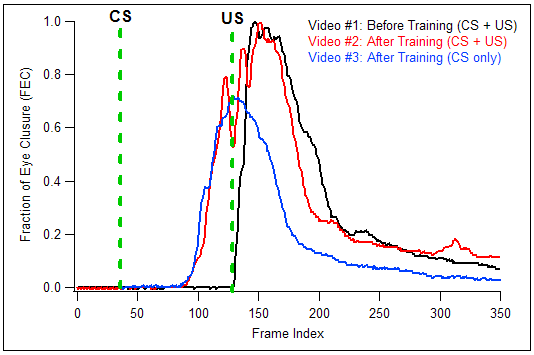
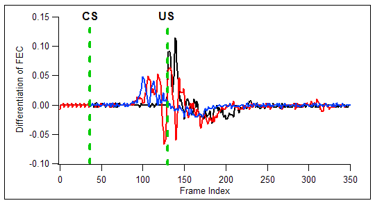
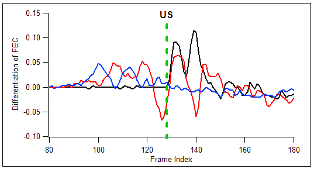
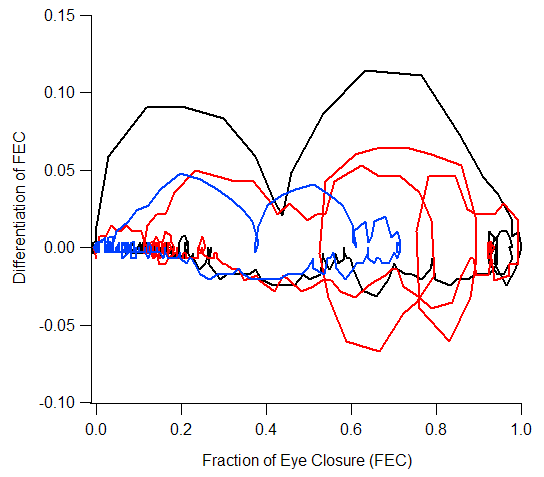

EyelidTracker
Test #5
Compare Three Videos
Videos:
Videos were generously provided by Dr. Javier Medina in the University of
Pennsylvania.
- Video #1: Before training. (CS + US)
- Video #2: After training. (CS + US)
- Video #3: After training (CS only)
Download:
EyelidTracker_v03.03.ipf
Results:
Condition: Threshold = 60
Video #1: Before training (CS + US)
Video #2: After training (CS + US)
Video #3: After training (CS only)
Fraction of Eyelid Closure vs. Frame Index

Differentiation of FEC vs. Frame Index


Differentiation of FEC vs. FEC
